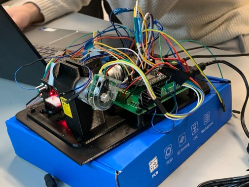
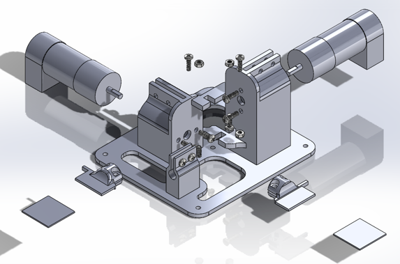
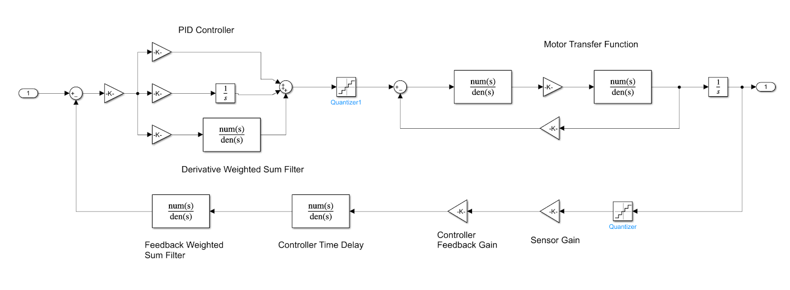
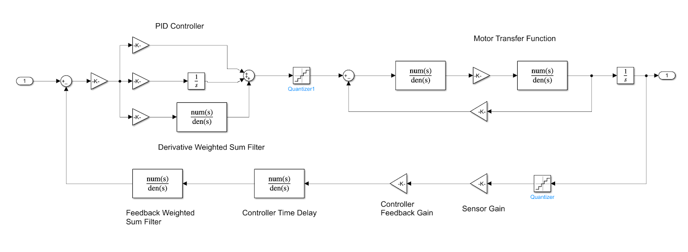

Overview
Designed and implemented a two-degree-of-freedom (2-DoF) laser projection system capable of rendering static shapes and dynamic animations. The system combines embedded firmware, digital signal decoding, and closed-loop motor control to accurately steer a laser beam in two axes.
This project emphasized real-time control, feedback processing, and end-to-end system integration across hardware and software boundaries.
System Architecture
The system consists of two motor-driven axes controlling the laser’s horizontal and vertical position. An embedded microcontroller executes the control loop, while quadrature encoders provide position feedback. The controller computes actuation commands using a PID control law to track desired trajectories.
- ESP32 microcontroller running real-time control firmware
- Two-axis actuation with quadrature encoder feedback
- SPI communication with external digital logic for decoding and timing
- Interrupt-driven control loop execution
Hardware Implementation
A custom mechanical assembly was designed to mount the laser and actuators, providing stable and repeatable motion. Encoder feedback enables precise measurement of shaft position and velocity, which is essential for closed-loop control.
Physical System: Real-world laser projector prototype.
Mechanical Design: Structural layout used to align actuators and optics.
Control and Signal Processing
Quadrature encoder signals are decoded to determine position and direction of motion. The decoded position is fed into a discrete-time PID controller implemented on the ESP32. Controller gains were tuned experimentally to balance responsiveness, stability, and tracking accuracy.
 

- Interrupt-based encoder decoding for accurate position tracking
- Discrete-time PID control with adjustable gains
- Closed-loop control verified through step and trajectory responses
Results and Demonstration
The system successfully projected a variety of shapes and animations by following time-varying reference trajectories. Stable closed-loop behavior was achieved after controller tuning, with minimal overshoot and consistent tracking across both axes.
A short demonstration video captures the system projecting dynamic patterns in real time.
Summary
- Designed and built a functional 2-DoF laser projection system
- Implemented real-time quadrature decoding and PID control
- Integrated mechanical, electrical, and firmware components
- Demonstrated stable closed-loop performance through real-world testing